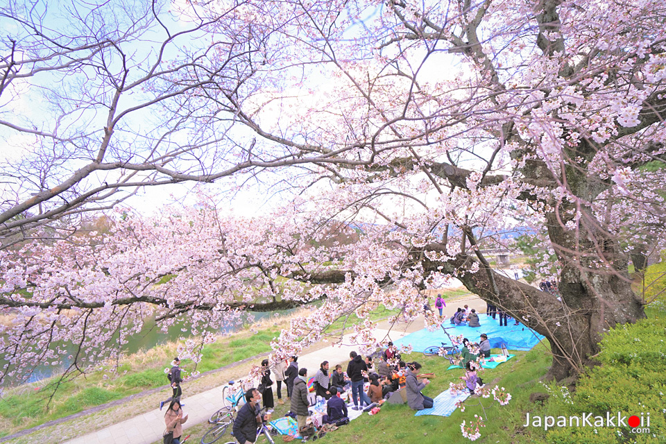

การชมดอกซากุระ หรือ "ฮานามิ" (Hanami) คือประเพณีเก่าแก่ของญี่ปุ่นในการเฉลิมฉลองฤดูใบไม้ผลิด้วยการนั่งปิกนิก สังสรรค์ ถ่ายรูปใต้ต้นซากุระบาน ซึ่งมักจัดขึ้นช่วงปลายเดือนมีนาคมถึงต้นเดือนพฤษภาคม กิจกรรมหลักคือการนั่งปูเสื่อจองที่ชมความงาม ทั้งช่วงกลางวันและชมไลท์อัพตอนกลางคืน (โยซากุระ) โดยเน้นความสนุกสนานและการดูแลรักษาสิ่งแวดล้อม